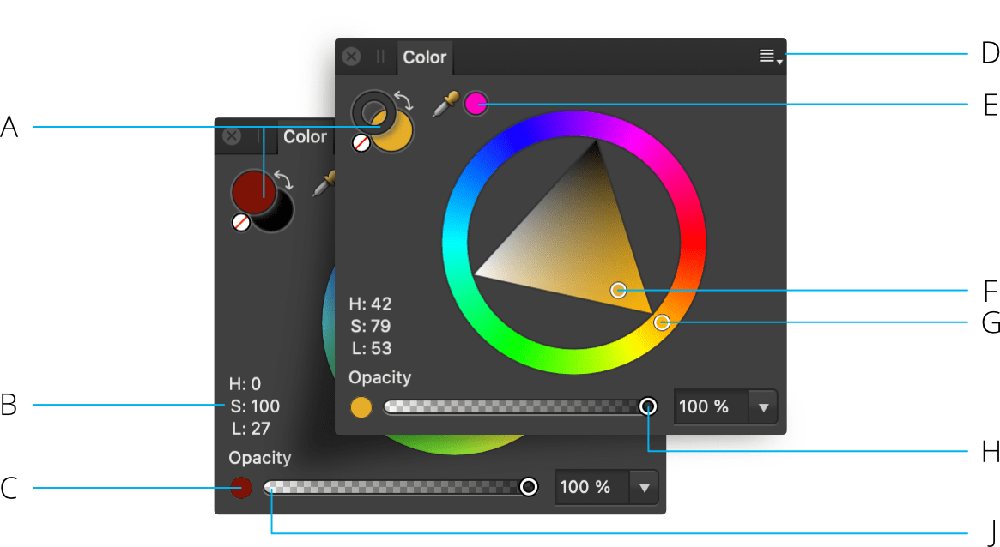

The Color panel is used to choose color for various tools and selected objects.
The Color panel can operate in several color modes—HSL, RGB, CMYK and LAB—and has various ways of defining color—color wheel (HSL only), color boxes and color sliders. Color tints can also be applied from within the panel.

Like the Swatches panel, the Color panel takes on different appearances depending on the active Persona and on the selected tool. The large color selectors indicate the currently selected colors.
The active color selector is shown at the front of the two color selectors. Choosing a new color will apply it to the active color selector.
With the Color panel, colors can be applied to an object or for use by a tool in just a few clicks. Opacity and noise are further color attributes which can be applied.
When choosing colors in the Color panel, you can choose from various selection preferences and color model values. The color selection preferences are changed in the Panel Preferences menu.
Depending on the color model selected, you can also choose to work in 8 bit, 16 bit or Percentage mode.
Some of the selection methods allow you to set color using values other than RGB. This doesn't change the working color profile of the document, but changes the input values for the colors.
The following color selection preferences are available from the Panel Preferences menu.
By default, the color space is locked when using Sliders (e.g., CMYK sliders) to prevent it from changing. This avoids inadvertently swapping to another mode after using swatches or selecting a different object created with a different color mode. When unlocked, the Color panel will remember the color mode that the selected object was created in. This lock only works on the current session; subsequent sessions will use the HSL color wheel as default.
The picker lets you sample colors within or outside Affinity Designer, then use them in your design.
Once your color has been chosen and applied to a tool or object, there are several ways to preserve this color for later use.
The following options are available from the Panel Preferences menu.